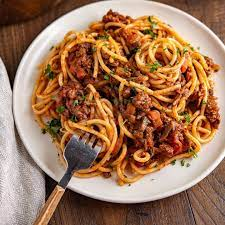

Ingredients
- 200g spaghetti
- 100g minced beef
- 1 onion, chopped
- 2 garlic cloves, minced
- 400g canned tomatoes
- 2 tbsp tomato paste
- 1 tsp dried oregano
- Salt and pepper, to tast
Instructions
- Cook spaghetti according to package instructions.
- In a separatepan, cook minced beef until browned.
- Add shopped onion and garlic, and cook until softened.
- Stir in canned tomaties, tomato paste, and oregano.
- Simmer for 15-20 minutes. Season with salt and pepper.
- Serve sauce over spaghetti.
recipe-link